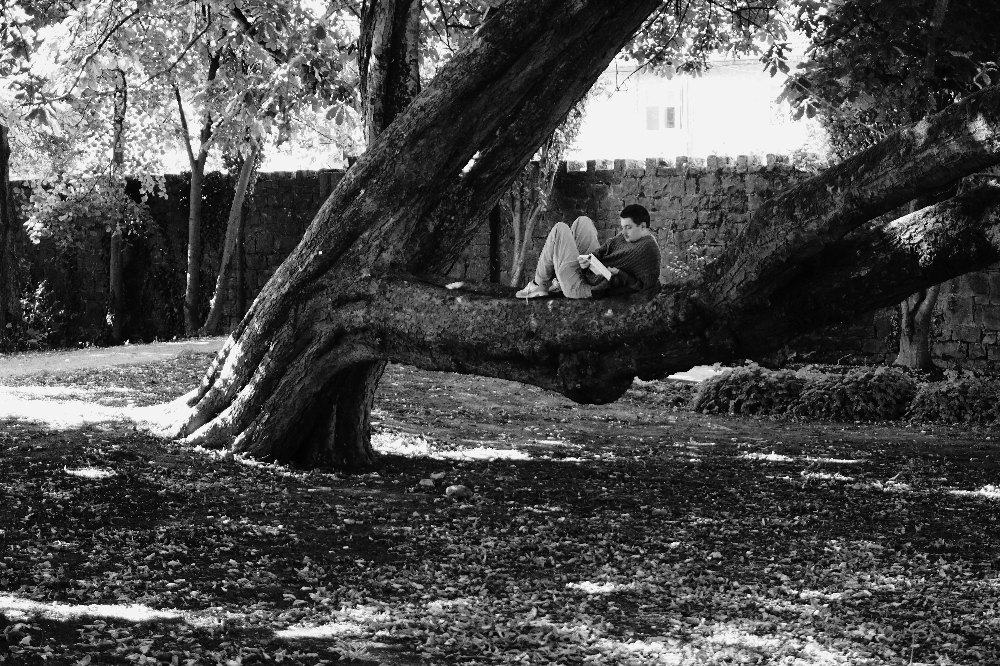
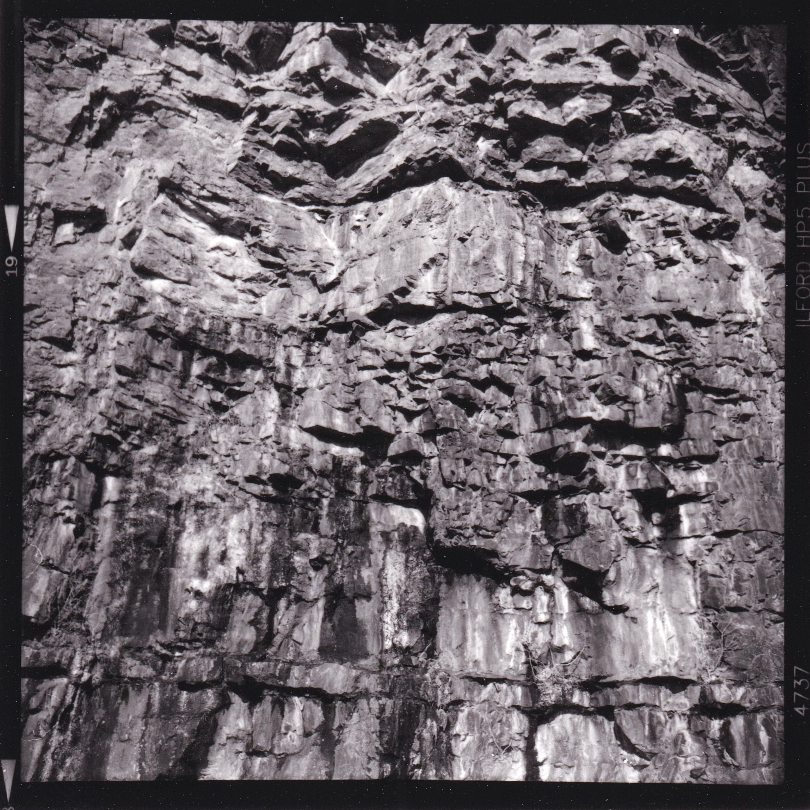
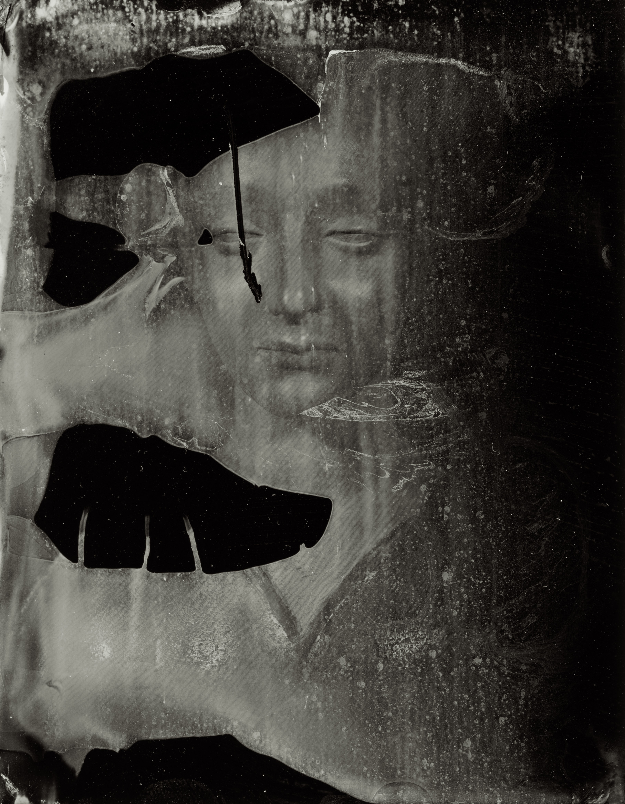
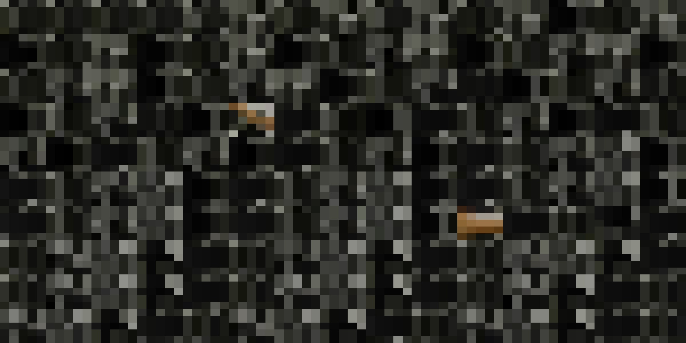
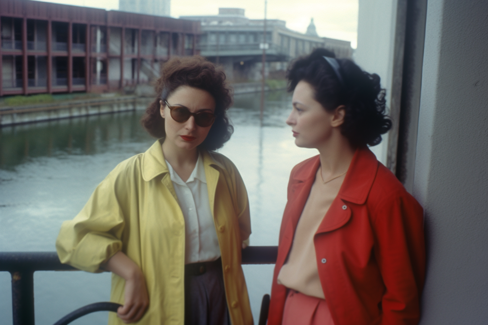
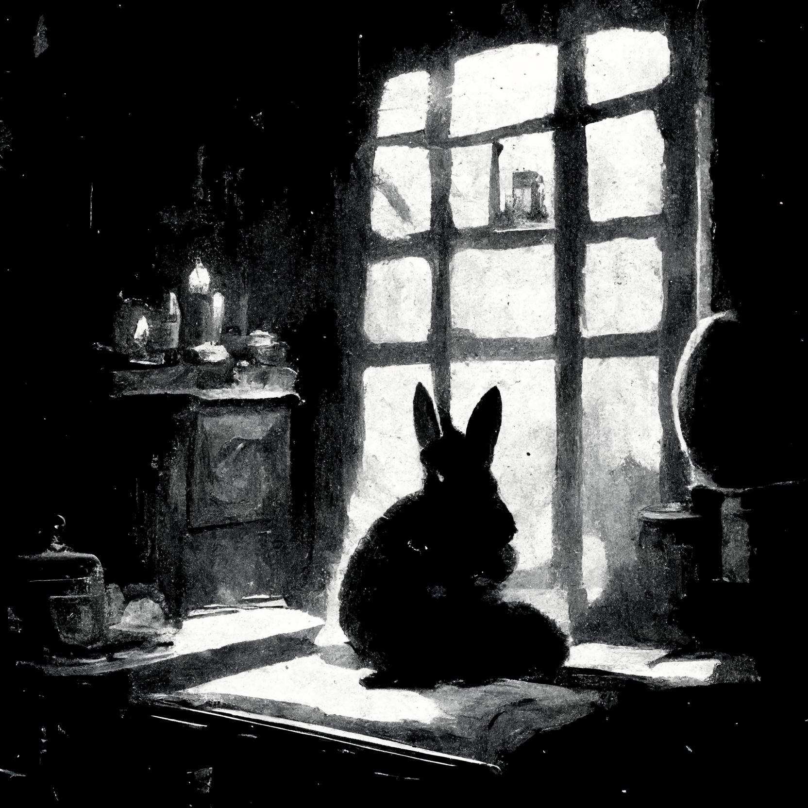

Exhibitions
saccades
126 Artist-Run Gallery & Studios in collaboration with Artspace Studios, Galway
saccades is a take on human vision explored through photographs oscillating between stumbling and deliberation. Taking the physiological phenomenon of saccadic eye movement as its conceptual foundation, the work speculates how photography, in its photochemical and digital forms, both mirrors and contrasts our neurological apparatus of seeing.
Publications

Data Pipelines, Attention Crops, and Nature Detached: The Colonial Logic of Contemporary AI
Contemporary artificial intelligence operates through colonial logic, imposing singular perspectives, enacting violence, and maintaining destructive relationships with both humans and wider ecologies. This essay examines how AI technologies, subordinated to transnational corporations and oppressive states, perpetuate patterns of exploitation reminiscent of historical colonialism, extracting value from the global peripheries while concentrating wealth in the Western world.

Climbing Out of the Abyss: On Tearing Objects, Injecting Values, and Automating Work
This essay is an expanded discussion following Vilém Flusser’s unpublished essay On Being Subject to Objects in which he argued that the human is split between what is and what should be, living in the abyss between phenomena and values. By turning branches into sticks and rare minerals into data centers, the human makes a vain attempt to produce things to climb out of its abyss while increasingly becoming subject to its own cultural objects.

Camera Archaeologia: A Media Archaeological Investigation into the Contemporary Use of Nineteenth-Century Photographic Processes
As digital technologies determine the practice and experience of everyday life today, the earliest photochemical processes resurface to provide stimulating and provocative modes for visual production. Around the world, a small but attention-worthy number of photographers attempt to rediscover what nineteenth-century photographic processes can offer without turning their backs on digital. This paper explores the role of such "old" practices in the contemporary context.

Our Collective Noise (OCN): A Tactical Response to Computer Vision, Surveillance, and Noise
Our Collective Noise (OCN) is a research-based tactical media project. As an attempt to transform the top-down pervasive qualities of machine learning (ML), computer vision (CV), and surveillance technologies into a bottom-up tactical tool, it plays around the concepts of noise, de-identification, accidental aesthetics, and human-machine collaboration.

Infra-ordinary Images: Machine Vision's Ways of Permeating Everyday Life
French cultural critic Georges Perec suggests that people should shift their attention away from the spectacular and extraordinary to the everyday, habitual aspects of life, as these hold the true essence of our experiences. Perec uses the term 'infra-ordinary' to describe these unnoticed, routine elements of life that, despite being constructed, feel second nature to us. This my attempt to think about images that become infra-ordinary.

Eye-pparatus: Re-imagining the Human Eye in the Nineteenth Century
Among many scientific discoveries and breakthroughs, the 19th century witnessed a set of physiological experiments that revolved around the eye and its lightsensitive capacities. Those experiments significantly influenced how the human eye was attempted to be instrumentalized, similar to the camera apparatus. This paper looks at the bizarre relationship between optography, photography, and our desire to record.
Projects
Our Collective Noise (OCN)
Computer Vision, Counter-Surveillance / 2025
test_prints
Gelatin Silver Prints, Darkroom Pop-up Exhibition / January 2025
nonplacesof.piss
Photography / 2022-ongoing
Calder Hunting
Photography / 2023-ongoing